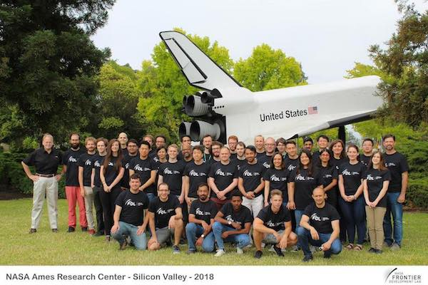
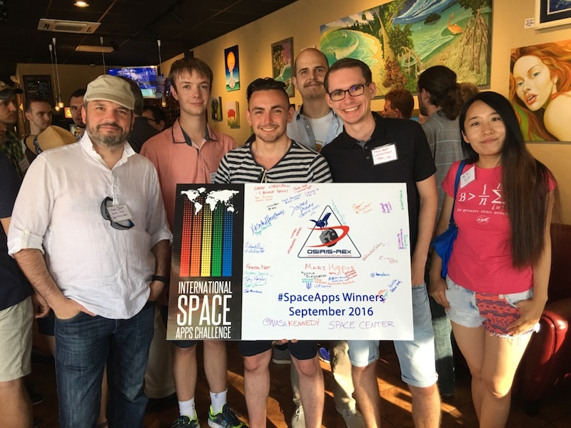

I consider myself fortunate and privilledged to work with so many brilliant minds over the last view years.
This page lists some of my work with NASA.
NASA Technosignatures Workshop
In 2018 NASA together with the Universities Space Research Association (USRA) hosted the first Technosignatures workshop at the Lunar Planetary Institute (LPI) in Houston Texas. I was very funtunate to be one of the workshop memebers attending this very special event.
I was privilleged to be able to present our NASA FDL work (live-streamed on NASA TV) about Bay and INARA.
Frank Soboczenski presenting at the workshop and live on NASA TV
The report of the workshop has now been submitted to NASA management, the United States Congress and is available to the public here:
NASA and the Search for Technosignatures: A Report from the NASA Technosignatures Workshop. Joint Strategic Conference Report to NASA Management & U.S. Congress (2018) NASA Technosignatures Workshop Houston, Texas. Available at https://arxiv.org/abs/1812.08681.
NASA Technosignatures Workshop Attendees @ Lunar Planetary Institute in Houston, Texas
NASA Globe Program
I have been accepted to the NASA Globe Program as STEM scientist in the area of artificial intelligence and machine-learning.
My pofile can be found here.
NASA FDL
I am accepted and invited to join the legendary NASA Frontier Development Lab (FDL) at the SETI Institute in Mountain View, California.

Frontier Development Lab acceptance and invitation letter
NASA Frontier Development Lab 2018 Group Picture
My project that I am continue to work on is:
Astrobiology Team II - partnered with Google Cloud
From biohints to confirmed evidence of life on exoplanets within given environmental substrates.
Environmental change and biological evolution are intrinsically linked terrestrially, in a process known as coevolution. Therefore, it is fair to hypothesize that extraterrestrial environments may have coevolved a broad range of alternative life processes markedly different to those we observe on Earth. Can we deploy AI techniques to generate an extended parameter space for possible metabolisms based on given (observed) environmental conditions and substrates: AKA “biohints” - potentially constrained by predictable behaviors of chemistry over a range of pressures and temperatures? This challenge would look at new tools to help determine if planetary data already gathered from Exoplanet Surveys contains biohints - in turn creating workflows to take these observed ingredients to produce plausible biochemistries and possible models of life on Exoplanets to inform further investigation.
NASA Space Apps
For more than five years, I am active as lead-organiser or organising comittee member of the NASA Space Apps Challenge in York. I look back on many amazing memories and fantastic software development moments. More information can be found at Space Apps Challenge or the previous York specific events:
- NASA Space Apps York 2017
- NASA Space Apps York 2016
- NASA Space Apps York 2015
- NASA Space Apps York 2014
- NASA Space Apps York 2013
Our team LaunchSight won the 2016 Challenge and was invited amonst other global winning teams to NASA Kennedy Space Center. We had the opportunity to meet so many amazing people and attend the OSIRIS REx mission launch.
Space Apps York - Winning Team Launch Sight with organisers @ NASA Kennedy Space Center
Additional pictures can be found here: (link soon available).